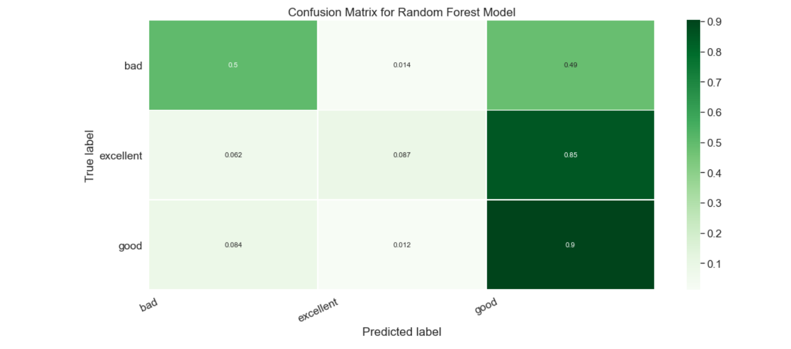
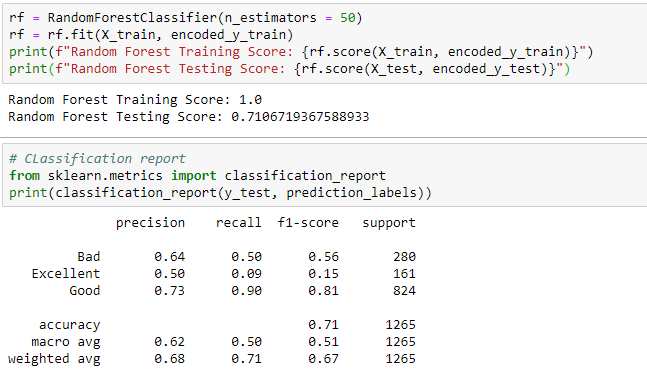

Random Forest Findings
What is Random Forest?
Random forests or random decision forests is a technique used in modeling predictions and behavior analysis and is built on decision trees. It contains many decision trees that represent a distinct instance of the classification of data input into the random forest. The random forest technique takes consideration of the instances individually, taking the one with the majority of votes as the selected prediction.
Each tree in the classifications takes input from samples in the initial dataset. Features are then randomly selected, which are used in growing the tree at each node. Every tree in the forest should not be pruned until the end of the exercise, when the prediction is reached decisively. In such a way, the random forest enables any classifiers with weak correlations to create a strong classifier.

Advantages of Random Forests
Random forests present estimates for variable importance, i.e., neural nets. They also offer a superior method for working with missing data. Missing values are substituted by the variable appearing the most in a particular node. Among all the available classification methods, random forests provide the highest accuracy. The random forest technique can also handle big data with numerous variables running into thousands. It can automatically balance data sets when a class is more infrequent than other classes in the data. The method also handles variables fast, making it suitable for complicated tasks..
Disadvantages of Random Forests
While random forests often achieve higher accuracy than a single decision tree, they sacrifice the intrinsic interpretability present in decision trees. Decision trees are among a fairly small family of machine learning models that are easily interpretable along with linear models, rule-based models, and attention-based models. This interpretability is one of the most desirable qualities of decision trees. It allows developers to confirm that the model has learned realistic information from the data and allows end-users to have trust and confidence in the decisions made by the model. For example, following the path that a decision tree takes to make its decision is quite trivial, but following the paths of tens or hundreds of trees is much harder. To achieve both performance and interpretability, some model compression techniques allow transforming a random forest into a minimal "born-again" decision tree that faithfully reproduces the same decision function. If it is established that the predictive attributes are linearly correlated with the target variable, using random forest may not enhance the accuracy of the base learner. Furthermore, in problems with multiple categorical variables, random forest may not be able to increase the accuracy of the base learner
Confusion Matrix
Model Accuracy
In the case of IMDB data Random forest had the highest accuracy score of all models at 71%
Precision tells us what percentage of the times the model predicted Bad, Good, or Excellent and was correct. Our model was correct 64% of the time it predicted Bad, 73% of the time it predicted Good, and 50% of the time it predicted Excellent with the test data.
Recall tells us how many of the total of each class was correctly identified. Our model correctly identified 50% of the Bad movies, 90% of the Good movies, and 9% of the Excellent movies in the test data.
F1-score measures the harmonic mean of precision and recall. F1-Score ranges from 0 to 1 with 1 being the best result. Our F1-score model findings show this model is better at predicting Good movies than Excellent or Bad Movies.
Macro accuracy average measures the classifications individually then takes an average.
Weighted accuracy average takes the fraction of correct predictions in each classification divided by the total number of instances in that class.